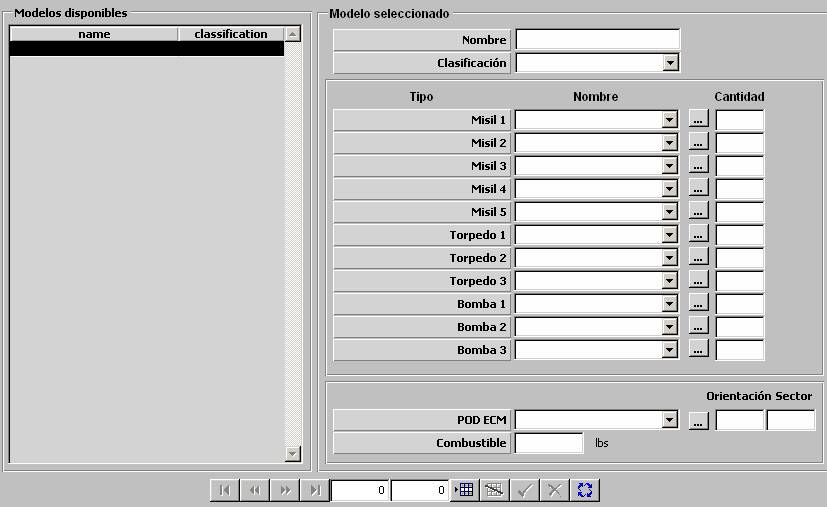

Configuración de Armas Aéreas

Las configuraciones de armas aéreas definen posibles conjuntos de armas que pueden ser recargados en una unidad aérea. Ver apartado Preparación de Unidades para Aviones y Helicópteros.
Las configuraciones de armas aéreas se caracterizan por un máximo de cuatro tipos de misil, tres tipos de torpedos, tres tipos de bombas, un ECM (POD ECM) y una cantidad de combustible.
Misil, 1 a 4: Ver apartado Misil (hasta cuatro tipos de misil).
Cantidad (Misiles, 1 a 4): Este parámetro determina la cantidad de misiles del tipo asociado que se instalan en la unidad aérea cuando se le carga esta configuración de armas. Este parámetro sólo podrá ser introducido si se ha seleccionado previamente un tipo de misil asociado en el campo asociado.
Unidades: ---
Rango: 0 – 999
Torpedo, 1 a 3: Ver apartado Torpedo (hasta tres tipos de torpedo).
Cantidad (Torpedos, 1 a 3): Este parámetro determina la cantidad de torpedos del tipo asociado que se instalan en la unidad aérea cuando se le carga esta configuración de armas. Este parámetro sólo podrá ser introducido si se ha seleccionado previamente un tipo de torpedos en el campo asociado.
Unidades: ---
Rango: 0 – 999
Bomba, 1 a 3: Ver apartado Bomba (hasta tres tipos de bomba).
Cantidad (Bomba, 1 a 3): Este parámetro determina la cantidad de bombas del tipo asociado que se instalan en la unidad aérea cuando se le carga esta configuración de armas. Este parámetro sólo podrá ser introducido si se ha seleccionado previamente un tipo de bomba en el campo asociado.
Unidades: ---
Rango: 0 – 999
POD ECM: Este parámetro determina el equipo ECM que se instala en la unidad aérea cuando se le carga esta configuración de armas. Sólo podrá ser seleccionado de entre aquellos equipos ECM que sean tipo POD ECM. Ver apartado ECM.
Sector (POD ECM): Este parámetro determina el sector en que es efectiva la perturbación del equipo POD ECM. Sólo podrá ser introducido si se ha seleccionado un equipo POD ECM para esta configuración.
Unidades: grados
Rango: 0 – 360
Orientación (POD ECM): Este parámetro determina la orientación en la que se centra el sector anterior. Sólo podrá ser introducido si se ha seleccionado un equipo POD ECM para esta configuración.
Unidades: grados
Rango: 0 – 360
Combustible: Este parámetro determina la cantidad de combustible adicional con la que se carga a la unidad aérea cuando instala esta configuración de armas aéreas.
Unidades: libras
Rango: 0 – 99999